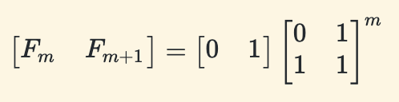
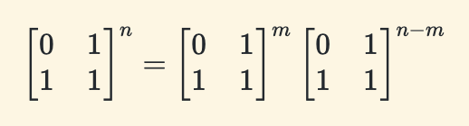

读书笔记之《Algorithms》3
~~ 更新于 -> 2020-10-27
Dynamic Programming（动态规划）
第一个简单的动态规划算法
大学时没上过课，都是闷着自学的；把好多问题都想复杂了，原来用 for 循环迭代填充斐波那契数组就是一个动态规划算法。
结合快速求解矩阵幂运算（O(log(n))）计算斐波那契数
重点就在左边矩阵的 n 次幂上！通过递归可以将矩阵乘法的次数降到 log(n) 次（第一章中提供了两种两数相乘的参考算法，均用到递归思想）。实际上，迭代用到的基本运算是加法（O(n)，n 为数字位数），而矩阵运算中使用了更为昂贵的乘法（目前最快的两数字乘法运算的时间复杂度为 O(n log(n)，n 为数字位数)，发现于 2019 年）；所不同的是迭代的循环次数为 n，而计算矩阵的幂的递归次数为 log(n)；所以，这个递归算法比迭代算法快一丢丢，时间复杂度为（Ω(n)，理由是 O(n log(n) log(n)) < O(n^2)，如下图所示）。
那么接下来在设计递归算法之前，还需要若干步推导。从 figure 1 看出，我们要设计一个函数，返回值可以是一个元组 (F(n-1), F(n))；递归式可以设计为 T(n) = T(n/2) + O(n)，这样效率最高。有了目标，n/2 是特殊情况，不妨从普通情况开始推导：
首先，这个算法还有一种行向量的表达方式：  ，另外幂运算的特点是  。所以，可以得到 F(n)的计算公式：
有了 figure 2 中这个重要公式后，我们分别假设 n=2t-1,m=t-1 和 n=2t,m=t，得到：
好了，公式部分到此为止，接下来就是代码实现：
# F(n-1), F(n)
def FastRecFibo(n):
if n == 0:
return 1, 0
if n == 1:
return 0, 1
m = math.floor(n / 2)
hprv, hcur = FastRecFibo(m) # F(m-1), F(m)
prev = hprv * hprv + hcur * hcur # F(2m-1)
curr = hcur * (hprv + hprv + hcur) # F(2m)
next = prev + curr # F(2m+1)
if n % 2 == 0:
return prev, curr
else:
return curr, next
书中的典型案例
- 求斐波那契数
（陆续完善……）
书中习题
（陆续完善……）
⚠️ 请先安装一款邮件软件（部分浏览器可能不支持，请使用设备默认浏览器打开本页面）